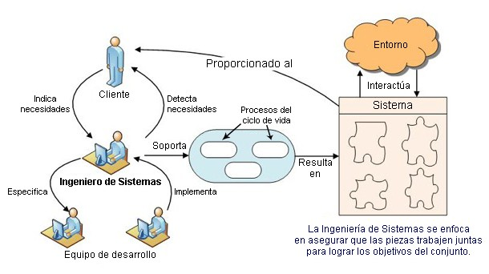

Existen diferentes tipos de sistemas en distintas áreas, como por ejemplo:1. Sistemas Informáticos: Como los sistemas operativos, sistemas de gestión de bases de datos, sistemas de control de versiones, entre otros. 2. Sistemas de Comunicación: Tales como redes de comunicación, sistemas de teleconferencia, sistemas de telefonía, entre otros. 3. Sistemas de Control: Incluyendo sistemas de control industrial, sistemas de automatización, sistemas de gestión de procesos, entre otros. 4. Sistemas de Información: Como sistemas de información empresarial (ERP), sistemas de información geográfica (GIS), entre otros. 5. Sistemas de Gestión: Como sistemas de gestión de recursos humanos, sistemas de gestión de proyectos, entre otros.
Tipos De Sistemas En Ingeneria De Sistemas
Dentro del campo de la ingeniería de sistemas, se pueden identificar varios tipos de sistemas, como:1. Sistemas de Información: Se centran en el desarrollo, implementación y gestión de sistemas de información que ayudan a las organizaciones a gestionar eficazmente sus datos y procesos.2. Sistemas de Control y Automatización: Estos sistemas se ocupan de controlar procesos físicos o industriales mediante el uso de equipos electrónicos y software especializado.3. Sistemas Embebidos: Son sistemas diseñados para realizar funciones específicas dentro de dispositivos y maquinaria, como sistemas de control de vehículos, electrodomésticos inteligentes, entre otros.4. Sistemas de Comunicación: Incluyen el diseño y la gestión de redes de comunicación, protocolos de comunicación, sistemas de telecomunicaciones, entre otros.5. Sistemas de Gestión de Base de Datos: Se encargan de diseñar, implementar y administrar bases de datos para almacenar, recuperar y gestionar la información de una organización de manera eficiente.

Referencias
Aqui es donde sacamos la informacion recopilada en nuestra pagina